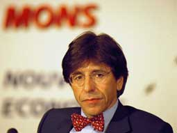

 Di Ruppo naît le 18 juillet À Morlanwelz (Belgique) dans une famille de 7 enfants. Son père décède d'un accident de la route en Juillet . Il obtient un doctorat en Sciences de l'Université de Mons (Belgique), et devient Lecture member of staff de l'Université de Leeds (Grande-Bretagne).
En 1982 il devient Conseiller communal à la ville de Mons (Belgique), dont il devient échevin de la Santé, de la Rénovation urbaine et des Affaires sociales en 1986. , il est élu Député de l'Arrondissement de Mons-Borinage, jusqu'en 1989 où il devient membre du Parlement européen.
Le 7 Novembre , Di Rupo dépose au Parlement Européen une proposition de résolution portant sur la création d'un Centre européen d'observation des ovnis (B3-/90), ainsi rédigée :
Considérant que, depuis de nombreuses années, des citoyens affirment avoir observé des phénomènes inexpliqués dans le ciel de plusieurs pays européens,
considérant que, ces derniers mois, des personnes dignes de foi, des scientifiques et des militaires ont également été témoins de manifestations non expliquées assimilées aux "OVNI" (Objets Volants Non Identifiés),
considérant le grand nombre de témoignages émanant de plusieurs pays de la Communauté européenne durant la nuit du 5 au 6 Novembre ,
considérant qu'une partie de la population s'inquiète de la fréquence de ces phénomènes,
demande à la Commission la création d'un "Centre européen d'observation des OVNI" à bref délai ;
propose que ce Centre européen d'observation des "OVNI" recueille toutes les observations éparses signalées par les citoyens européens et par les institutions (militaires et scientifiques) et qu'il organise des campagnes scientifiques d'observation ;
suggère que ce Centre soit géré par la Commission des Communautés européennes et par un comité permanent réunissant des experts des 12 états membres.
En 1991, suite à cette intervention, la SOBEPS noue des contacts exploratoires avec la Direction Générale XII (M. Isi Saragosi) en vue d'une création future d'une commission européenne chargée de collecter et d'analyser les renseignements sur les phénomènes ovnis se déroulant au-dessus de l'Europe. Celle-ci accepte également le principe d'un cofinancement de l'organisation d'un colloque international réunissant les experts européens et internationaux qui se déroulerait sous son égide (un crédit serait alors affecté).
Cette année-là Di Ruppo est Sénateur, puis Ministre de l'Education de 1992 à et de l'Audiovisuel (1993-1994) de la Communauté française. il devient Vice-1er Ministre et Ministre des Communications et des Entreprises publiques. Lors de la constitution du gouvernement suivant, il est nommé Vice-1er Ministre et Ministre de l'Economie et des Télécommunications. Au milieu de il est chargé du Commerce extérieur. Suite aux élections de 1999, il est l'un des principaux négociateurs des accords du nouveau gouvernement "Arc-en-ciel". Cette tâche accomplie, il devient Ministre-Président de la Région Wallonne. En Octobre, il est élu à la présidence du Parti Socialiste. A partir de Novembre, Vice-Président de l'Internationale Socialiste. Après les élections communales d'Octobre 2000, il devient Bourgmestre de Mons. Ministre d'Etat à partir de , il représente également la Belgique à la Convention européenne, (créée en vue de doter l'Union d'une Constitution). Elu Député fédéral, Di Rupo est nommé "Informateur" par le Roi, le 21 Mai 2003. Le 28 Septembre, il est réélu à la Présidence du Parti Socialiste.
Références :